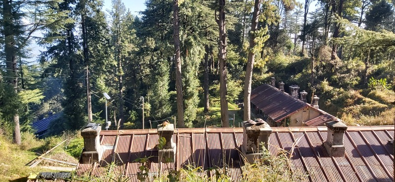
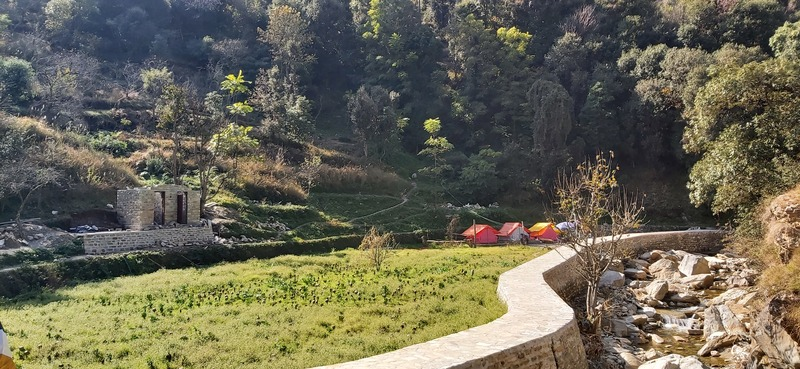
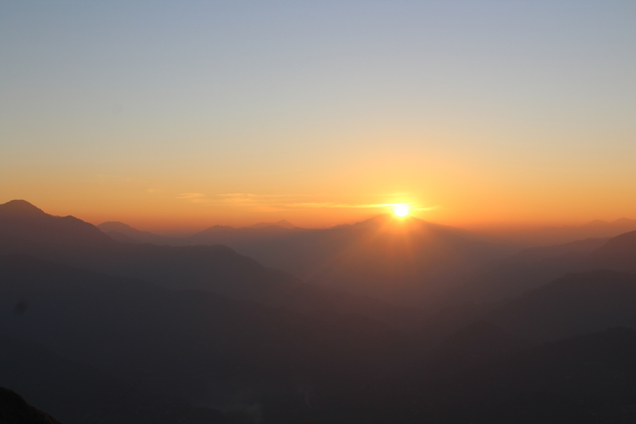
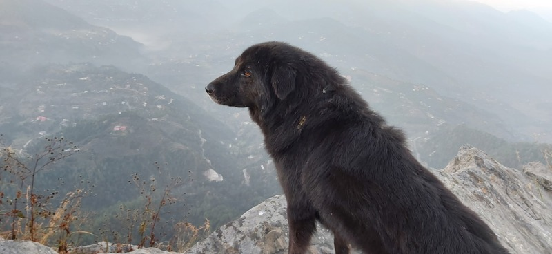

🌄 My trip to Mukteshwar
After spending more than a year in a dark room, I decided to visit mountains first time in my life. I was always excited to do these kind of stuff.
I choose this place Mukteshwar, a small district somewhere in Uttrakhand, India. I did my research and watched many vlogs.
I wanted to do all the normie stuff like making vlog and enjoying the views. I had lot of issues regarding my career choices...
I don't have any job currently. I also believed, I was getting bored with Computers a little. I had high hopes that this trip will move me.
How it went?
I don't like places with crowd, that's why I chose an underrated place with almost no tourist. It was two day trip.
First day, I got really excited, but second day it was depressing. That place made me silent, not internally but externally. I went with one of my friend.
I prepared lot of jokes to crack to target his self esteem. Some shitty vlog ideas to make. But that place was so silent, It made me silent.
Best Experience..
When I went to Mukteshwar. I was in a cottage, Almost every cool place of Mukteshwar was near to the cottage. The best place of that place was "Chauli's Jali". It was the most highest altitude of Mukteshwar and had some edgy rocks. Perfect place to push someone into death.
But the view was amazing. When I first went at that place, It was horrible experience. It was evening and so many normie people were talking.
The only reason I choose to be on Mukteshwar is because I wanted peace. But those people were annoying. So I came back early and made a plan. Next morning at 5AM in dark, I forced my friend to go to that place, He was terrified (dark + forest) but I was excited.
He even tried to abandon me but I started going alone, through jungle at dark. I just wanted to own that place. But then he followed and we went to that same place again, but this time. It was dawn and dayum whole Mukteshwar lights were like stars. I had stars on top and bottom both. We sat on the most edgy rock and enjoyed the peace.
Waterfall Experience..
Mukteshwar also have a famous waterfall. Which was very far away from our cottage. But we had car, so we decided to visit. We did 800M treking to visit that place and then I ended up again with crowd. The issue is not people. The issue is "They are annoying".
Every person just wanted a perfect click. I don't understand how a person can use phone at such a beautiful place. I hate these "in cells" people.
I can't ignore them and I ended up just sitting in the corner and being fly on the wall. While my phone was switched off in my bag. I am not against clicking photos, I clicked few too. But I don't like trying to click a perfect picture of me in front of every nice thing I see.
I just click a single pic of something, I find cool. I never try hard to take the best picture. Because I have internet (I can search the exact place pic in 4k).
Sunset
One thing I realized after this trip is, people really don't enjoy the place they visit. They just want to increase the number of places they visit.
My way of traveling was very different. I never pressurized myself to see everything. I just enjoyed, what I had. For example - I knew about a church in Mukteshwar. So I went there, it was close but dayum the sunset behind that church was so beautiful. I just spend whole evening on that one spot.
My love for Darkness
Unlike others I enjoyed Mukteshwar more at Night, My friend called me crazy for that. Because I wanted to go to Jungle in Night.
But he forced me to stayed near the road. But I have to say, that place had peace, which we city people can't imagine.
Looking at the dark jungle in complete dark. Beathing fresh air and absolute silence was amazing.
A Dog
I am not an animal person, I don't like dogs or cats. But in Mukteshwar, every dog was very silent. This is the nature of animals in hill areas. I was sitting in the most edgy rock of one of the most highest mountain of Mukteshwar and suddenly a silent dog came next to me.
Obviously I can't explain the moment I had with that thing. But it was cool the way he tried to be
friend. No pick up line like "woof". I was lucky he came silently, because I was on the edge. I really loved the way he offered a friendship.
He walked with us back to jungle whole way followed us, until we reached a temple. That dog my friend is r/animalbeingbros.
My thoughts while returning.
I really believed, I am 18 and I don't need this amount of peace. I want rush, thrill and adventure. It's sad but now I realized, I was not completely disconnected from society and people. Technology connected me in a wrong way. But I need it.
I got urge to use computers again and play games again. I wanted to use my computer all night and listen to loud music.
The peace of Mukteshwar is cool, But I felt like, I will enjoy that peace more after some big battles in life.